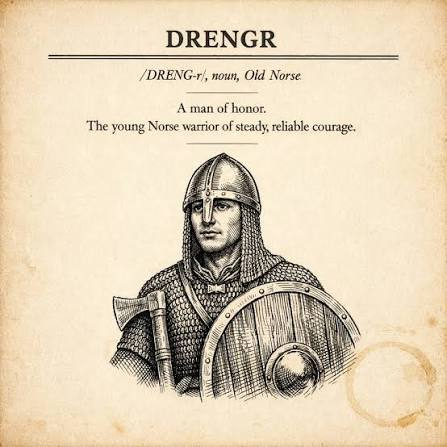

AI-first · startside
En AI-first bedrift, bygget som kode
Dette er historien om hvordan et lite norsk selskap drifter hele sin infrastruktur — brannmur, DNS, nettsider, tilgangskontroll — med AI-agenter som gjør jobben og ett menneske som godkjenner den.
Vi kaller hver tjeneste en drengr — norrønt for den unge krigeren med stø, pålitelig tapperhet. Hos oss er en drengr tre ting som alltid hører sammen: ett repo, én container og én AI-agent som bygger, drifter og dokumenterer tjenesten.

Idégrunnlag
Mennesket har siste ordet — alltid
All forretningsdrift er kode. Drengene — operative AI-agenter — forfatter forslag og committer dem i repoet. Diffen vises i drengens eget web-UI, et menneske trykker Ja, og endringen kjøres av et skript utenfor containeren — aldri av UI-et selv.
Brannmurregler, DNS-poster, tilgangslister — alt går gjennom denne flyten. Git-historikken er revisjonsloggen: hvem foreslo, hvem godkjente, hva ble kjørt.
Hvis det ikke finnes en commit,
har det ikke skjedd.